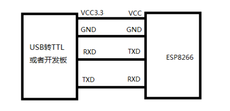
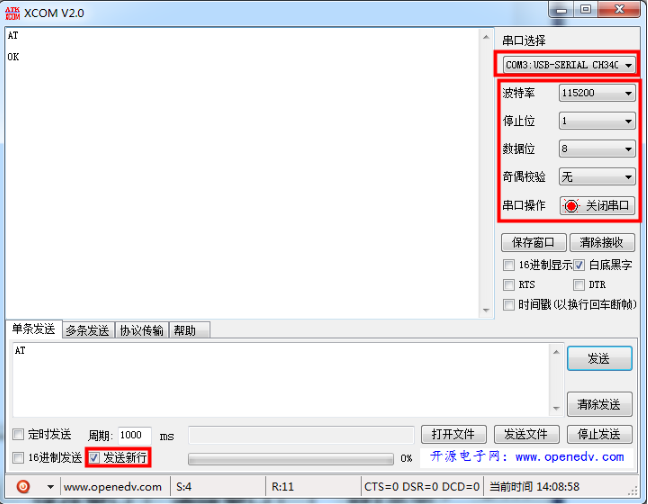
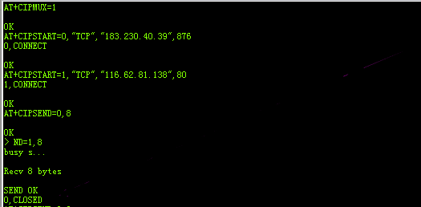

ESP8266多链接配置教程
ESP8266多链接配置教程
ESP8266是一款串口wifi模块，模块内嵌 TCP/IP 协议，可以实现串口、WIFI 之间的数据传输转换传输. 模块内嵌AT指令，可以通过串口发送AT指令来操作模块。由于网上对ESP8266多连接模式配置，没有详细的教程，做物联网产品研发可能会让自己的设备同时登陆到第三方网站上获取信息，为了在获取第三方网站数据时，仍然保持与主服务器通信，这里就需要将8266配置为多链接模式.
为了方便本次教程用USB转串口模块为媒件，把电脑与ESP8266模块物理连接（做成产品是通过控制芯片的串口脚与模块连接）.

1.准备完毕后，在电脑端打开串口调试助手（教程所用软件由正点原子开发），选择正确的 COM 号，然后设置波特率为 115200，然后发送测试指令 ’’ AT“，返回OK则模块通信正常。如果未收到任何数据，尝试将USB转串口模块 Tx，和Rx 用杜邦线短接，再发送数据，查看是否收到同样数据，来判断是否是USB转串口模块故障。（注：初次使用USB转串口模块需要安装驱动）

3.指令
1）设置 WIFI 模式：
AT+CWMODE=1 //设置为 STA 模式响应:OK
2）重启生效
AT+RST
响应:OK3）连接路由器
AT+CWJAP=”TP-LINK20E8”,”123465789” //连接的wifi名和密码
响应:OK4）开启多连接模式
AT+CIPMUX=1
响应:OK5）与服务器构建链接
AT+CIPSTART=0,”TCP”,”183.230.40.39”,876
响应:0 CONNECTOK6）与第三方服务器构建链接
AT+CIPSTART=1,”TCP”,”116.62.81.138”,80
响应:1 CONNECTOK7）发送数据（0号服务器发送113个字节数据）
AT+CIPSEND=0，113
响应:OK

现在就可以向服务器发送数据了。